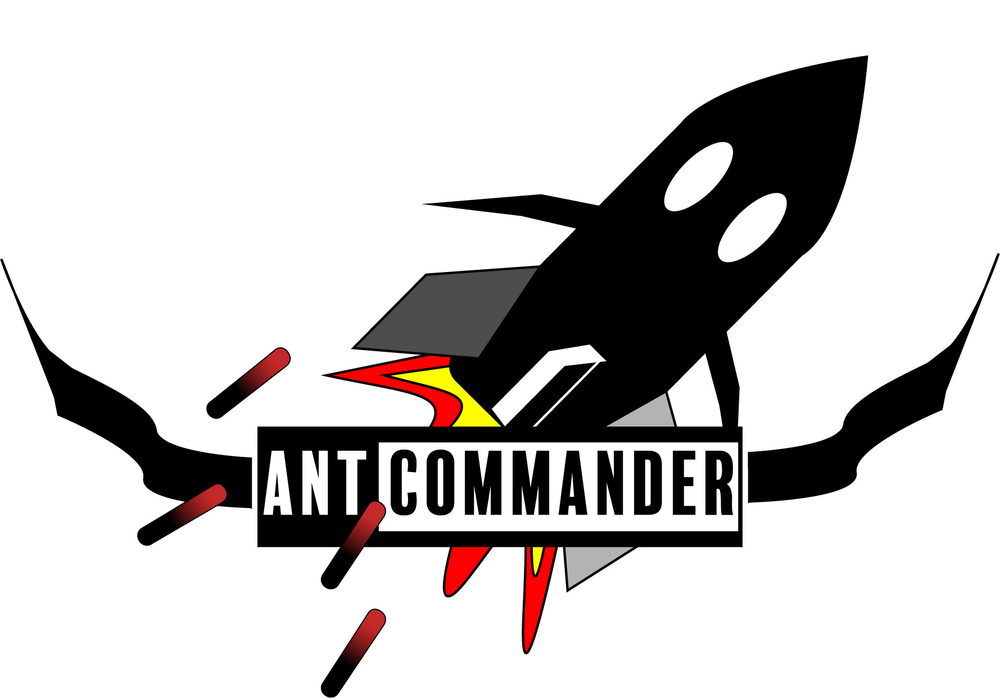
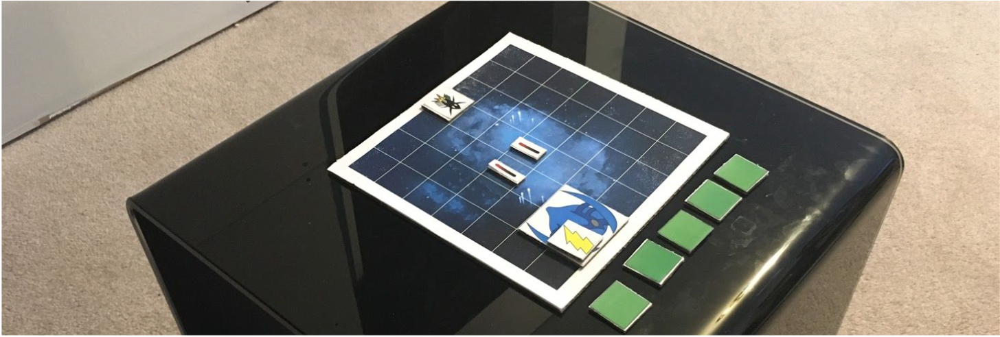

Ant Commander
Team: Ishpreet Sekhon, Brandyn Chew, Wan Haichao, Zoe Zhang
The Process
Game Description
Ant Commander is a reimagining of a 2D paltforming game called Antlion. The goal of the project was to redesign it using a mixture of "fun keys" to create a compelling experience. The team created a challenging bullet hell game with energy managment mechanics from games like DarkSouls, and focused on boss mechanic theming.
Challenge
Ant commander's original idea was going to be a boss-rush style game where players go through a series of bosses one after another, aquiring new items along the way to improve their abilities.

The game was to be a strategic, fast paced game where players would have to choose between firing or movement as both would drain their energy.
After creating a rapid physical prototype and playtesting the strategy elements of the game, we noticed the strategy element was not really working. The cause of this was that the grid style was too restrictive for the boss mechanics. Some bosses would teleport when bullets were heading there way, but we didn't put enough limitations on the firing based on how slow players could fire at that point, so the boss would constantly teleport. Our solution was to expand the scale of the game.
Programming
For this project, I did all of the scripting and implementation within Unity. The challenge here was that this was my first time working with Unity. I was unfamiliar with the editor and the design document that our team created had some complex mechanics in it, like compelx fire effects with their own colliders. To overcome this I did some research on of Unity on my own to learn how to create weapons and projectiles. Doing this i learned about a lot of the editor properties that are on the right side, as well as scripting in C# to allow for the complex results of collisions.